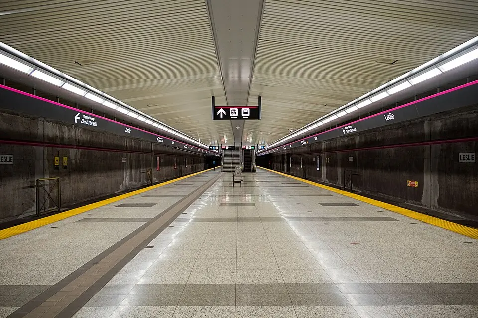

Signal
SignalStation atlas / Leslie
Station history
Leslie


Station history
Micah Lexier incorporated handwritten versions of “Sheppard” and “Leslie” from members of the community into roughly 17,000 tiles.
The TTC formally opened the Sheppard subway and invited visitors to try the trains during an open house.
Regular service began at Leslie, just west of the subway crossing of the East Don River.